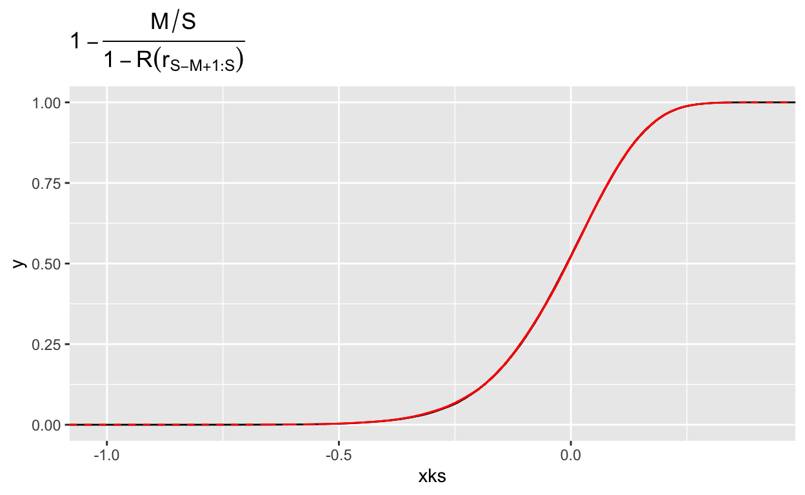

Look. I had to do it so I wrote it out in detail. This is some of the convergence theory for truncated and winzorised importance sampling estimators
Imagine you have a target probability distribution \(p(\theta)\) and you want to estimate the expectation \(I_h = \int h(\theta) p(\theta)\,d(\theta)\). That’s lovely and everything, but if it was easy none of us would have jobs. High-dimensional quadrature is a pain in the arse.
A very simple way to get an decent estimate of \(I_h\) is to use importance sampling, that is taking draws \(\theta_s\), \(s = 1,\ldots, S\) from some proposal distribution \(\theta_s \sim g(\theta)\). Then, noting that \[ I_h = \int h(\theta) p (\theta)\,d\theta = \int h(\theta) \underbrace{\frac{p(\theta)}{g(\theta)}}_{r(\theta)}g(\theta)\,d\theta, \] we can use Monte Carlo to estimate the second integral. This leads to the importance sampling estimator \[ I_h^S = \sum_{s=1}^S h(\theta_s) r(\theta_s). \]
This all seems marvellous, but there is a problem. Even though \(h\) is probably a very pleasant function and \(g\) is a nice friendly distribution, \(r(\theta)\) can be an absolute beast. Why? Well it’s1 the ratio of two densities and there is no guarantee that the ratio of two nice functions is itself a nice function. In particular, if the bulk of the distributions \(p\) and \(g\) are in different places, you’ll end up with the situation where for most draws \(r(\theta_s)\) is very small2 and a few will be HUGE3.
This will lead to an extremely unstable estimator.
It is pretty well known that the raw importance sampler \(I_h^S\) will behave nicely (that is will be unbiased with finite variance) precisely when the distribution of \(r_s = r(\theta_s)\) has finite variance.
Elementary treatments stop there, but they miss two very big problems. The most obvious one is that it’s basically impossible to check if the variance of \(r_s\) is finite. A second, much larger but much more subtle problem, is that the variance can be finite but massive. This is probably the most common case in high dimensions. McKay has an excellent example where the importance ratios are bounded, but that bound is so large that it is infinite for all intents and purposes.
All of which is to say that importance sampling doesn’t work unless you work on it.
If the problem is the fucking ratios then by gum we will fix the fucking ratios. Or so the saying goes.
The trick turns out to be modifying the largest ratios enough that we stabilise the variance, but not so much as to overly bias the estimate.
The first version of this was truncated importance sampling (TIS), which selects a threshold \(T\) and estimates the expectation as \[ I_\text{TIS}^S = \frac{1}{S}\sum_{s= 1}^S h(\theta_s) \max\{r(\theta_s), T\}. \] It’s pretty obvious that \(I^S_\text{TIS}\) has finite variance for any fixed \(T\), but we should be pretty worried about the bias. Unsurprisingly, there is going to be a trade-off between the variance and the bias. So let’s explore that.
To get an expression for the bias, first let us write \(r_s = r(\theta_s)\) and \(h_s = h(\theta_s)\) for \(\theta_s \sim g\). Occasionally we will talk about the joint distribution or \((r_s,h_s) \sim (R,H)\). Sometimes we will also need to use the indicator variables \(z_i = 1_{r_i < T}\).
Then, we can write4 \[ I = \mathbb{E}(HR \mid R \leq T) \Pr(R \leq T) + \mathbb{E}(HR \mid R > T) \Pr(R > T). \]
How does this related to TIS? Well. Let \(M = \sum_{s=1}^S z_i\) be the random variable denoting the number of times \(r_i > T\). Then, \[\begin{align*} \mathbb{E}(I_\text{TIC}^S) &= \mathbb{E}\left( \frac{1}{S}\sum_{s=1}^Sz_ih_ir_i\right) + \mathbb{E}\left( \frac{T}{S}\sum_{s=1}^S(1-z_i)h_i\right) \\ &=\mathbb{E}_M\left[\frac{S-M}{S}\mathbb{E}(HR \mid R < T) + \frac{MT}{S}\mathbb{E}(H \mid R > T)\right] \\ &=\mathbb{E}(HR \mid R \leq T) \Pr(R \leq T) + T\mathbb{E}(H \mid R > T) \Pr(R > T). \end{align*}\]
Hence the bias in TIS is \[ I - \mathbb{E}(I_\text{TIS}^S) = \mathbb{E}(H(R-T) \mid R > T) \Pr(R > T). \]
To be honest, this doesn’t look phenomenally interesting for fixed \(T\), however if we let \(T = T_S\) depend on the sample size then as long as \(T_S \rightarrow \infty\) we get vanishing bias.
We can get more specific if we make the assumption about the tail of the importance ratios. In particular, we will assume that5 \(1-R(r) = \Pr(R > r) = cr^{-1/k}(1+o(1))\) for some6 \(k<1\).
While it seems like this will only be useful for estimating \(\Pr(R>T)\), it turns out that under some mild7 technical conditions, the conditional excess distribution function8 \[ R_T(y) = \Pr(R - T \leq y \mid R > T) = \frac{R(T + y) - R(T)}{1-R(T)}, \] is well approximated by a Generalised Pareto Distribution as \(T\rightarrow \infty\). Or, in maths, as \(T\rightarrow \infty\), \[ R_T(y) \rightarrow \begin{cases} 1- \left(1 + \frac{ky}{\sigma}\right)^{-1/k}, \quad & k \neq 0 \\ 1- \mathrm{e}^{-y/\sigma}, \quad &k = 0, \end{cases} \] for some \(\sigma > 0\) and \(k \in \mathbb{R}\). The shape9 parameter \(k\) is very important for us, as it tells us how many moments the distribution has. In particular, if a distribution \(X\) has shape parameter \(k\), then \[ \mathbb{E}|X|^\alpha < \infty, \quad \forall \alpha < \frac{1}{k}. \] We will focus exclusively on the case where \(k < 1\). When \(k < 1/2\), the distribution has finite variance.
If \(1- R(r) = cr^{-1/k}(1+ o(1))\), then the conditional exceedence function is \[\begin{align*} R_T(y) &= \frac{cT^{-1/k}(1+ o(1)) - c(T+y)^{-1/k}(1+ o(1))}{cT^{-1/k}(1+ o(1)))} \\ &= \left[1 - \left(1 + \frac{y}{T}\right)^{-1/k}\right](1 + o(1)), \end{align*}\] which suggests that as \(T\rightarrow \infty\), \(R_T\) converges to a generalised Pareto distribution with shape parameter \(k\) and scale parameter \(\mathcal{O}(T)\).
All of this work lets us approximate the distribution of \((R-T \mid R>T )\) and use the formula for the mean of a generalised Pareto distribution. This gives us the estimate \[ \mathbb{E}(R- T \mid R>T) \approx \frac{T}{1-k}, \] which estimates the bias when \(h(\theta)\) is constant10 as \[ I - \mathbb{E}(I_\text{TIS}^S) \approx \mathcal{O}\left(T^{1-1/k}\right). \]
For what it’s worth, Ionides got the same result more directly in the TIS paper, but he wasn’t trying to do what I’m trying to do.
The variance is a little bit more annoying. We want it to go to zero.
As before, we condition on \(z_s\) (or, equivalently, \(M\)) and then use the law of total variance. We know from the bias calculation that \[ \mathbb{E}(I_\text{TIS}^S \mid M) =\frac{S-M}{S}\mathbb{E}(HR \mid R>T) + \frac{TM}{S}\mathbb{E}(H \mid R>T). \]
A similarly quick calculation tells us that \[ \mathbb{V}(I_\text{TIS}^S \mid M) = \frac{S-M}{S^2}\mathbb{V}(HR \mid R \leq T) +\frac{MT^2}{S^2}\mathbb{V}(H \mid R>T). \] To close it out, we recall that \(M\) is the sum of Bernoulli random variables so \[ M \sim \text{Binomial}(S, \Pr(R > T)). \]
With this, we can get an expression for the unconditional variance. To simplify the expression, let’s write \(p_T = \Pr(R > T)\). Then, \[\begin{align*} \mathbb{V}(I_\text{TIS}^S) &=\mathbb{E}_M\mathbb{V}(I_\text{TIS}^S \mid M) + \mathbb{V}_M\mathbb{E}(I_\text{TIS}^S \mid M) \\ &= S^{-1}(1-p_T)\mathbb{V}(HR \mid R \leq T) +S^{-1}T^2p_T\mathbb{V}(H \mid R>T)\\ &\quad + S^{-1}p_T(1-p_T)\mathbb{E}(HR \mid R>T)^2 + S^{-1}Tp_T(1-p_T)\mathbb{E}(H \mid R>T)^2. \end{align*}\]
There are four terms in the variance. The first and third terms are clearly harmless: they go to zero no matter how we choose \(T_S\). Our problem terms are the second and fourth. We can tame the fourth term if we choose \(T_S = o(S)\). But that doesn’t seem to help with the second term. But it turns out it is enough. To see this, we note that \[\begin{align*} Tp_T\mathbb{V}(H\mid R>T) &=\leq Tp_T\mathbb{E}(H^2 \mid R>T)\\ &\leq p_T\mathbb{E}(H^2 R\mid R>T) \\ &\leq \mathbb{E}(H^2 R)\\ &= \int h(\theta)^2 p(\theta)\,d\theta < \infty. \end{align*}\] where the second inequality uses the fact that \(R>T\) and the third comes from the law of total probability.
So the TIS estimator has vanishing bias and variance as long as the truncation \(T_S \rightarrow \infty\) and \(T_S = o(S)\). Once again, this is in the TIS paper, where it is proved in a much more compact way.
It can also be useful to have an understanding of how wild the fluctuations \(I - I_\text{TIS}^S\) are. For traditional importance sampling, we know that if \(\mathbb{E}(R^2)\) is finite, then then the fluctuations are, asymptotically, normally distributed with mean zero. Non-asymptotic results were given by Chatterjee and Diaconis that also hold even when the estimator has infinite variance.
For TIS, it’s pretty obvious that for fixed \(T\) and \(h \geq 0\), \(I_\text{TIS}^S\) will be asymptotically normal (it is, after all, the sum of bounded random variables). For growing sequences \(T_S\) it’s a tiny bit more involved: it is now a triangular array11 rather than a sequence of random variables. But in the end very classical results tell us that for bounded12 \(h\), the fluctuations of the TIS estimator are asymptotically normal.
It’s worth saying that when \(h(\theta)\) is unbounded, it might be necessary to truncate the product \(h_ir_i\) rather than just \(r_i\). This is especially relevant if \(\mathbb{E}(H \mid R=r)\) grows rapidly with \(r\). Personally, I can’t think of a case where this happens: \(r(\theta)\) usually grows (super-)exponentially in \(\theta\) while \(h(\theta)\) usually grows polynomially, which implies \(\mathbb{E}(H \mid R=r)\) grows (poly-)logarithmically.
The other important edge case is that when \(h(\theta)\) can be both positive and negative, it might be necessary to truncate \(h_ir_i\) both above and below.
TIS has lovely theoretical properties, but it’s a bit challenging to use in practice. The problem is, there’s really no practical guidance on how to choose the truncation sequence.
So let’s do this differently. What if instead of specifying a threshold directly, we instead decided that the largest \(M\) values are potentially problematic and should be modified? Recall that for TIS, the number of samples that exceeded the threshold, \(M\), was random while the threshold was fixed. This is the opposite situation: the number of exceedences is fixed but the threshold is random.
The threshold is now the \(M\)th largest value of \(r_s\). We denote this using order statistics notation: we re-order the sample so that \[ r_{1:S} \leq r_{2:S}\leq \ldots r_{S:S}. \] With this notation, the threshold is \(T = r_{S-M+1:S}\) and the Winsorized importance sampler (WIS) is \[ I^S_\text{WIS} = \frac{1}{S}\sum_{s = 1}^{S-M} h_{s:S}r_{s:S} + \frac{r_{S-M+1:S}}{S}\sum_{s=S-M+1}^S h_{s:S}, \] where \((r_{s:S}, h_{s:S})\) are the \((r_s, h_s)\) pairs ordered so that \(r_{1:S} \leq r_{2:S}\leq \cdots \leq r_{S:S}\). Note that \(h_{s:S}\) are not necessarily in increasing order: they are known as concomitants of \(r_{s:S}\), which is just a fancy way to say that they’re along for the ride. It’s very important that we reorder the \(h_s\) when we reorder the \(r_s\), otherwise we won’t preserve the joint distribution and we’ll end up with absolute rubbish.
We can already see that this is both much nicer and much wilder than the TIS distribution. It is convenient that \(M\) is no longer random! But what the hell are we going to do about those order statistics? Well, the answer is very much the same thing as before: condition on them and hope for the best.
Conditioned on the event13 \(\{r_{S-M+1:S} = T\}\), we get \[ \mathbb{E}\left(I_\text{WIS}^S \mid r_{S-M+1:S} = T\right) = \left(1 - \frac{M}{S}\right)\mathbb{E}(RH \mid R < T) + \frac{MT}{S} \mathbb{E}(H \mid R \geq T). \] From this, we get that the bias, conditional on \(r_{S-M+1:S} = T\) is \[\begin{multline*} \left|I - \mathbb{E}\left(I_\text{WIS}^S \mid r_{S-M+1:S} = T\right)\right| =\left|\left[\Pr(R < T) - \left(1 - \frac{M}{S}\right)\right]\mathbb{E}(RH \mid R < T) \right.\\ \left.+ \left[\Pr(R \geq T) - \frac{M}{S}\right] \mathbb{E}(H(R - T) \mid R \geq T)\right|. \end{multline*}\]
You should immediately notice that we are in quite a different situation from TIS, where only the tail contributed to the bias. By fixing \(M\) and randomising the threshold, we have bias contributions from both the bulk (due, essentially, to a weighting error) and from the tail (due to both the weighting error and the truncation). This is going to require us to be a bit creative.
We could probably do something more subtle and clever here, but that is not my way. Instead, let’s use the triangle inequality to say \[ \left|\mathbb{E}(RH \mid R > T)\right| \leq \frac{\mathbb{E}(R |H| 1(R<T))}{\Pr(R <T)} \leq \frac{\|h\|_{L^1(p)}}{\Pr(R <T)} \] and so the first term in the bias can be bounded if we can bound the relative error \[ \mathbb{E}\left|1 - \frac{1- M/S}{\Pr(R < r_{S-M+1:S})}\right|. \]
Now the more sensible among you will say Daniel, No! That’s a ratio! That’s going to be hard to bound. And, of course, you are right. But here’s the thing: if \(M\) is small relative to \(S\), it is tremendously unlikely that \(r_{S-M+1:S}\) is anywhere near zero. This is intuitively true, but also mathematically true.
To attack this expectation, we are going to look at a slightly different quantity that has the good grace of being non-negative.
Lemma Let \(X_s\), \(s= 1, \ldots S\) be an iid sample from \(F_X\), let \(0\leq k\leq S\) be an integer. Then \[ \frac{p}{F_X(x_{k:S})} -p \stackrel{d}{=} \frac{p(S-k+1)}{k} \mathcal{F}, \] and \[ \frac{1-p}{1- F_x/(x_{k:S})} - (1-p) \stackrel{d}{=} \frac{k(1-p)}{S-k+1}\mathcal{F}^{-1} \] where \(\mathcal{F}\) is an F-distributed random variable with parameters \((2(S-k+1), 2k)\).
Proof
For any \(t\geq 0\), \[\begin{align*} \Pr\left(\frac{p}{F_X(x_{k:S})} - p \leq t\right) &=\Pr\left(p - pF_X(x_{k:S}) \leq tF_X(x_{k:S})\right) \\ &= \Pr\left(p \leq (t+p)F_X(x_{k:S})\right) \\ &=\Pr\left(F_X(x_{k:S}) \geq \frac{p}{p+t}\right)\\ &= \Pr\left(x_{k:S} \geq F_X^{-1}\left(\frac{p}{p+t}\right)\right)\\ &= 1- I_{\frac{p}{p+t}}(k, S-k+1) \\ &= I_{\frac{t}{p+t}}(S-k+1, k), \end{align*}\] where \(I_p(a,b)\) is the incomplete Beta function.
You could, quite reasonably, ask where the hell that incomplete Beta function came from. And if I had thought to look this up, I would say that it came from Equation 2.1.5 in David and Nagaraja’s book on order statistics. Unfortunately, I did not look this up. I derived it, which is honestly not very difficult. The trick is to basically note that the event \(\{x_{k:S} \leq \tau\}\) is the same as the event that at least \(k\) of the samples \(x_s\) are less than or equal to \(\tau\). Because the \(x_s\) are independent, this is the probability of observing at least \(k\) heads from a coin with the probability of a head \(\Pr(x \leq \tau) = F_X(\tau)\). If you look this up on Wikipedia14 you see15 that it is \(I_{1-F_X(\tau)}(k,S-k+1)\). The rest just come from noting that \(\tau = F_X^{-1}(t/(p+t))\) and using the symmetry \(1-I_p(a,b) = I_{1-p}(b,a)\).
To finish this off, we note that \[ \Pr(\mathcal{F} \leq x) = I_{\frac{S-k+1}{(S-k+1)x+ k}}(S-k+1,k). \] From which, we see that \[\begin{align*} \Pr\left(\frac{p}{F_X(x_{k:S})} - p \leq t\right) &=\Pr\left(\mathcal{F} \leq \frac{k}{p(S-k+1)}t\right) \\ &= \Pr\left(\frac{p(S-k+1)}{k}\mathcal{F} \leq t\right). \end{align*}\]
The second result follows the same way and by noting that \(\mathcal{F}^{-1}\) is also F-distributed with parameters \((k, S-k+1)\).
The proof has ended
Now, obviously, in this house we do not trust mathematics. Which is to say that I made a stupid mistake the first time I did this and forgot that when \(Z\) is binomial, \(\Pr(Z \geq k) = 1 - \Pr(Z \leq k-1)\) and had a persistent off-by-one error in my derivation. But we test out our results so we don’t end up doing the dumb thing.
So let’s do that. For this example, we will use generalised Pareto-distributed \(X\).
library(tidyverse)
xi <- 0.7
s <- 2
u <- 4
samp <- function(S, k, p,
Q = \(x) u + s*((1-x)^(-xi)-1)/xi,
F = \(x) 1 - (1 + xi*(x - u)/s)^(-1/xi)) {
# Use theory to draw x_{k:S}
xk <- Q(rbeta(1, k, S - k + 1))
c(1 - p / F(xk), 1-(1-p)/(1-F(xk)))
}
S <- 1000
M <- 50
k <- S - M + 1
p <- 1-M/S
N <- 100000
fs <- rf(N, 2 * (S - k + 1), 2 * k )
tibble(theoretical = 1-p - p * fs * (S - k + 1)/k,
xks = map_dbl(1:N, \(x) samp(S, k, p)[1])) %>%
ggplot() + stat_ecdf(aes(x = xks), colour = "black") +
stat_ecdf(aes(x = theoretical), colour = "red", linetype = "dashed") +
ggtitle(expression(1 - frac(1-M/S , R(r[S-M+1:S]))))
tibble(theoretical = p - (1-p) * k/(fs * (S - k + 1)),
xks = map_dbl(1:N, \(x) samp(S, k, p)[2])) %>%
ggplot() + stat_ecdf(aes(x = xks), colour = "black") +
stat_ecdf(aes(x = theoretical), colour = "red", linetype = "dashed") +
ggtitle(expression(1 - frac(M/S , 1-R(r[S-M+1:S]))))

Fabulous. It follow then that \[ \left|1 - \frac{1-M/S}{R(r_{S-M+1})} \right| \stackrel{d}= \left|\frac{M}{S} - \frac{M(S-M)}{S(S-M-1)}\mathcal{F}\right| \leq \frac{M}{S} + \frac{M(S-M)}{S(S-M-1)} \mathcal{F}, \] where \(\mathcal{F}\) has an F-distribution with \((M, S-M+1)\) degrees of freedom. As \(\mathbb{E}(\mathcal{F}) = 1 + 1/(S-M-1)\), it follows that this term goes to zero as long as \(M = o(S)\). This shows that the first term in the bias goes to zero.
It’s worth noting here that we’ve also calculated that the bias is at most \(\mathcal{O}(M/S)\), however, this rate is extremely sloppy. That upper bound we just computed is unlikely to be tight. A better person than me would probably check, but honestly I just don’t give a shit16
The second term in the bias is \[ \left[\Pr(R \geq T) - \frac{M}{S}\right] \mathbb{E}(H(R - T) \mid R \geq T). \] As before, we can write this as \[ \left(1 - \frac{M/S}{1-R(T)}\right)|\mathbb{E}(H(R - T) 1_{R \geq T})| \leq \left|1 - \frac{M/S}{1-R(T)}\right|\|h\|_{L^1(p)}. \] By our lemma, we know that the distribution of the term in the absolute value when \(T = r_{S-M+1}\) is the same as \[ 1-\frac{M}{S} -\left(1 - \frac{M}{S} + \frac{1}{S}\right)\mathcal{F} = (\mu_F-\mathcal{F}) +\frac{M}{S}(\mathcal{F}-\mu_F) - \frac{1}{S}\mathcal{F} + \frac{1}{M-1}\left(\frac{M}{S} - 1\right), \] where \(\mathcal{F} \sim \text{F}_{2(S-M+1), 2M}\), which has mean \(\mu_F = 1+(M-1)^{-1}\) and variance \[ \sigma^2_F = \frac{M^2S}{(S-M+1)(M-1)^2(M-2)} = \frac{1}{M}(1 + \mathcal{O}(M^{-1} + MS^{-1}). \] From Jensen’s inequality, we get \[ \mathbb{E}(|\mathcal{F} - \mu_F|) \leq \sigma_F = M^{-1/2}(1 + o(1)). \] If follows that \[ \mathbb{E}\left|1 - \frac{M/S}{1-R(r_{S-M+1:S})}\right| \leq M^{-1/2}(1+o(1))M^{1/2}S^{-1}(1 + o(1)) + S^{-1}(1+ o(1)) + (M-1)^{-1}(1+o(1)), \] and so we get vanishing bias as long as \(M\rightarrow \infty\) and \(M/S \rightarrow 0\).
Once again, I make no claims of tightness17. Just because it’s a bit sloppy at this point doesn’t mean the job isn’t done.
Theorem Let \(\theta_s\), \(s = 1,\ldots, S\) be an iid sample from \(G\) and let \(r_s = r(\theta_s) \sim R\). Assume that
\(R\) is absolutely continuous
\(M \rightarrow \infty\) and \(S^{-1}M \rightarrow 0\)
\(h \in L^1(p)\)
Then Winsorized importance sampling converges in \(L^1\) and is asymptotically unbiased.
End of Theorem
Ok so that’s nice. But you’ll notice that I did not mention our piss-poor rate. That’s because there is absolutely no way in hell that the bias is \(\mathcal{O}(M^{-1/2})\)! That rate is an artefact of a very sloppy bound on \(\mathbb{E}|1-\mathcal{F}|\).
Unfortunately, Mathematica couldn’t help me out. Its asymptotic abilities shit the bed at the sight of \({}_2F_1(a,b;c;z))\), which is everywhere in the exact expression (which I’ve put below in the fold.
-(((M/(1 + S))^(-(1/2) - S/2)*Gamma[(1 + S)/2]*
(6*(M/(1 + S))^(1/2 + M/2 + S/2)*((1 + S)/(1 - M + S))^(M/2 + S/2) -
5*M*(M/(1 + S))^(1/2 + M/2 + S/2)*((1 + S)/(1 - M + S))^(M/2 + S/2) +
M^2*(M/(1 + S))^(1/2 + M/2 + S/2)*((1 + S)/(1 - M + S))^(M/2 + S/2) +
8*S*(M/(1 + S))^(1/2 + M/2 + S/2)*((1 + S)/(1 - M + S))^(M/2 + S/2) -
6*M*S*(M/(1 + S))^(1/2 + M/2 + S/2)*((1 + S)/(1 - M + S))^(M/2 + S/2) +
M^2*S*(M/(1 + S))^(1/2 + M/2 + S/2)*((1 + S)/(1 - M + S))^(M/2 + S/2) +
2*S^2*(M/(1 + S))^(1/2 + M/2 + S/2)*((1 + S)/(1 - M + S))^(M/2 + S/2) -
M*S^2*(M/(1 + S))^(1/2 + M/2 + S/2)*((1 + S)/(1 - M + S))^(M/2 + S/2) -
6*Sqrt[-(M/(-1 + M - S))]*Sqrt[(-1 - S)/(-1 + M - S)]*
(M/(1 - M + S))^(M/2 + S/2)*Hypergeometric2F1[1, (1/2)*(-1 + M - S),
M/2, M/(-1 + M - S)] + 8*M*Sqrt[-(M/(-1 + M - S))]*
Sqrt[(-1 - S)/(-1 + M - S)]*(M/(1 - M + S))^(M/2 + S/2)*
Hypergeometric2F1[1, (1/2)*(-1 + M - S), M/2, M/(-1 + M - S)] -
2*M^2*Sqrt[-(M/(-1 + M - S))]*Sqrt[(-1 - S)/(-1 + M - S)]*
(M/(1 - M + S))^(M/2 + S/2)*Hypergeometric2F1[1, (1/2)*(-1 + M - S),
M/2, M/(-1 + M - S)] - 8*Sqrt[-(M/(-1 + M - S))]*
Sqrt[(-1 - S)/(-1 + M - S)]*S*(M/(1 - M + S))^(M/2 + S/2)*
Hypergeometric2F1[1, (1/2)*(-1 + M - S), M/2, M/(-1 + M - S)] +
4*M*Sqrt[-(M/(-1 + M - S))]*Sqrt[(-1 - S)/(-1 + M - S)]*S*
(M/(1 - M + S))^(M/2 + S/2)*Hypergeometric2F1[1, (1/2)*(-1 + M - S),
M/2, M/(-1 + M - S)] - 2*Sqrt[-(M/(-1 + M - S))]*
Sqrt[(-1 - S)/(-1 + M - S)]*S^2*(M/(1 - M + S))^(M/2 + S/2)*
Hypergeometric2F1[1, (1/2)*(-1 + M - S), M/2, M/(-1 + M - S)] +
6*M*(M/(1 + S))^(M/2)*((1 + S)/(1 - M + S))^(M/2 + S/2)*
Hypergeometric2F1[(1 + S)/2, (1/2)*(1 - M + S), (1/2)*(3 - M + S),
(-1 + M - S)/M] - 5*M^2*(M/(1 + S))^(M/2)*((1 + S)/(1 - M + S))^
(M/2 + S/2)*Hypergeometric2F1[(1 + S)/2, (1/2)*(1 - M + S),
(1/2)*(3 - M + S), (-1 + M - S)/M] + M^3*(M/(1 + S))^(M/2)*
((1 + S)/(1 - M + S))^(M/2 + S/2)*Hypergeometric2F1[(1 + S)/2,
(1/2)*(1 - M + S), (1/2)*(3 - M + S), (-1 + M - S)/M] +
2*M*S*(M/(1 + S))^(M/2)*((1 + S)/(1 - M + S))^(M/2 + S/2)*
Hypergeometric2F1[(1 + S)/2, (1/2)*(1 - M + S), (1/2)*(3 - M + S),
(-1 + M - S)/M] - M^2*S*(M/(1 + S))^(M/2)*((1 + S)/(1 - M + S))^
(M/2 + S/2)*Hypergeometric2F1[(1 + S)/2, (1/2)*(1 - M + S),
(1/2)*(3 - M + S), (-1 + M - S)/M] - 2*M*(M/(1 + S))^(M/2)*
((1 + S)/(1 - M + S))^(M/2 + S/2)*Hypergeometric2F1[(1 + S)/2,
(1/2)*(3 - M + S), (1/2)*(5 - M + S), (-1 + M - S)/M] +
3*M^2*(M/(1 + S))^(M/2)*((1 + S)/(1 - M + S))^(M/2 + S/2)*
Hypergeometric2F1[(1 + S)/2, (1/2)*(3 - M + S), (1/2)*(5 - M + S),
(-1 + M - S)/M] - M^3*(M/(1 + S))^(M/2)*((1 + S)/(1 - M + S))^
(M/2 + S/2)*Hypergeometric2F1[(1 + S)/2, (1/2)*(3 - M + S),
(1/2)*(5 - M + S), (-1 + M - S)/M] - 2*M*S*(M/(1 + S))^(M/2)*
((1 + S)/(1 - M + S))^(M/2 + S/2)*Hypergeometric2F1[(1 + S)/2,
(1/2)*(3 - M + S), (1/2)*(5 - M + S), (-1 + M - S)/M] +
M^2*S*(M/(1 + S))^(M/2)*((1 + S)/(1 - M + S))^(M/2 + S/2)*
Hypergeometric2F1[(1 + S)/2, (1/2)*(3 - M + S), (1/2)*(5 - M + S),
(-1 + M - S)/M]))/(((1 + S)/(1 - M + S))^S*
(2*(-2 + M)*M*Sqrt[(-1 - S)/(-1 + M - S)]*Gamma[M/2]*
Gamma[(1/2)*(5 - M + S)])))But do not fear: we can recover. At the cost of an assumption about the tails of \(R\). (We’re also going to assume that \(h\) is bounded because it makes things ever so slightly easier, although unbounded \(h\) is ok18 as long as it doesn’t grow too quickly relative to \(r\).)
We are going to make the assumption that \(R - T \mid R\geq T\) is in the domain of attraction of a generalized Pareto distribution with shape parameter \(k\). A sufficient condition, due to von Mises, is that \[ \lim_{r\rightarrow \infty} \frac{r R'(r)}{1-R(r)} = \frac{1}{k}. \]
This seems like a weird condition, but it’s basically just a regularity condition at infinity. For example if \(1-R(r)\) is regularly varying at infinity19 and \(R'(r)\) is, eventually, monotone20 decreasing, then this condition holds.
The von Mises condition is very natural for us as Falk and Marohn (1993) show that the relative error we get when approximating the tail of \(R\) by a generalised Pareto density is the same as the relative error in the von Mises condition. That is if \[ \frac{rR'(r)}{1-R(r)} = \frac{1}{k}(1 + \mathcal{O}(r^{-\alpha})) \] then \[ R'(r) = c w(cr - d)(1 + \mathcal{O}(r^{-\alpha})), \] where \(c,d\) are constants and \(w\) is the density of a generalised Pareto distribution.
Anyway, under those two assumptions, we can swap out the density of \((R-T)\mid R>T\) with its asymptotic approximation and get that, conditional on \(T= r_{S-M+1:S}\), \[ \mathbb{E}(H(R-T) \mid R>T) = (k-1)^{-1}T. \]
Hence, the second term in the bias goes to zero if \[ \mathbb{E}\left(r_{S-M+1:S}\left(1 - R(r_{s-M+1:S}) - \frac{M}{S}\right)\right) \] goes to zero.
Now this is not particularly pleasant, but it helps to recognise that even if a distribution doesn’t have finite moments, away from the extremes, its order statistics always do. This means that we can use Cauchy-Schwartz to get \[ \left|\mathbb{E}\left(r_{S-M+1:S}\left(1 - R(r_{s-M+1:S}) - \frac{M}{S}\right)\right)\right| \leq\mathbb{E}\left(r_{S-M+1:S}^2\right)^{1/2}\mathbb{E}\left[\left(1 - R(r_{s-M+1:S}) - \frac{M}{S}\right)^2\right]^{1/2}. \]
Arguably, the most alarming term is the first one, but that can21 be tamed. To do this, we lean into a result from Bickel (1967) who, if you examine the proof and translate some obscurely-stated conditions and fix a typo22, you get that \[ \mathbb{E}(r_{k:M}^2) \leq C k\begin{pmatrix} S \\ k\end{pmatrix} \int_0^1 t^{k-2-1}(1-t)^{S-k-2}\,dt. \] You might worry that this is going to grow too quickly. But it doesn’t. Noting that \(B(n,m) = \Gamma(n)\Gamma(m)/\Gamma(n+m)\), we can rewrite the upper bound in terms of the Beta function to get \[ \mathbb{E}(r_{k:M}^2) \leq C \frac{\Gamma(S+1)}{\Gamma(S-3)} \frac{\Gamma(k-2)}{\Gamma(k+1)}\frac{\Gamma(S-k-1)}{\Gamma(S-k+1)}. \]
To show that this doesn’t grow too quickly, we use the identity \[ \frac{\Gamma(x + a)}{\Gamma(x + b)} \propto x^{a-b}(1 + \mathcal{O}(x^{-1})). \] From this, it follows that \[ \mathbb{E}(r_{k:M}^2) \leq C S^4k^{-3}(S-k)^{-2}(1+ \mathcal{O}(S^{-1}))(1+ \mathcal{O}(k^{-1}))(1+ \mathcal{O}((S+k)^{-1})). \] In this case, we are interested in \(k = S-M+1\), so \[ \mathbb{E}(r_{k:M}^2) \leq C S^4S^{-3}M^{-2}(1 - M/S + 1/S)^{-3}(1 - 1/M)^{-2}(1+ \mathcal{O}(S^{-1}))(1+ \mathcal{O}(S^{-1}))(1+ \mathcal{O}(M^{-1})). \]
Hence the we get that \(\mathbb{E}(r_{k:M}^2) = \mathcal{O}(SM^{-2})\). This is increasing23 in \(S\), but we will see that it is not going up too fast.
For the second half of this shindig, we are going to attack \[ \mathbb{E}\left[\left(1 - R(r_{s-M+1:S}) - \frac{M}{S}\right)^2\right] = \mathbb{E}\left[\left(1 - R(r_{s-M+1:S})\right)^2 - 2\left(1 - R(r_{s-M+1:S})\right)\frac{M}{S} +\left(\frac{M}{S}\right)^2\right]. \] A standard result24 from extreme value theory is that \(R(r_{k:S})\) has the same distribution as the \(k\)th order statistics from a sample of \(S\) iid \(\text{Uniform}([0,1])\) random variables. Hence25, \[ R(r_{S-M+1:S}) \sim \text{Beta}(S-M+1, M). \] If follows26 that \[ \mathbb{E}(1- R(r_{S-M+1:S})) = \frac{M}{S+1} = \frac{M}{S}\frac{1}{1+S^{-1}} \] and \[ \mathbb{E}((1- R(r_{S-M+1:S}))^2) = \frac{M(M+1)}{(S+1)(S+2)} = \frac{M^2}{S^2}\left(\frac{1 + M^{-1}}{1 + 3S^{-1} + 2S^{-2}}\right). \] Adding these together and doing some asymptotic expansions, we get \[ \mathbb{E}\left[\left(1 - R(r_{s-M+1:S}) - \frac{M}{S}\right)^2\right] = \frac{M^2}{S^2} + \mathcal{O}\left(\frac{M}{S^2}\right), \] which goes to zero27 like \(\mathcal{O}(S^{-1})\) if \(M = \mathcal{O}(S^{1/2})\).
We can multiply this rate together and get that the second term in the bias is bounded above by \[ \left[\left(\frac{S}{M^2} (1 + \mathcal{O}(M^{-1} + MS^{-1}))\right)\left(\frac{M^2}{S^2} (1 + \mathcal{O}(M^{-1} + MS^{-1})\right)\right]^{1/2} = S^{-1/2}(1 + o(1)). \]
Putting all of this together we have proved the following Corollary.
Corollary Let \(\theta_s\), \(s = 1,\ldots, S\) be an iid sample from \(G\) and let \(r_s = r(\theta_s) \sim R\). Assume that
\(R\) is absolutely continuous and satisfies the von Mises condition28 \[ \frac{rR'(r)}{1-R(r)} = \frac{1}{k}(1 +\mathcal{O}(r^{-1})). \]
\(M = o(S)\)
\(h\) is bounded29
Winsorized importance sampling converges in \(L^1\) with rate of, at most, \(\mathcal{O}(MS^{-1} + S^{-1/2})\), which is balanced when \(M = \mathcal{O}(S^{1/2})\). Hence, WIS is30 \(\sqrt{n}\)-consistent.
Right, that was a bit of a journey, but let’s keep going to the variance.
It turns out that following the route I thought I was going to follow does not end well. That lovely set of tricks breaking up the variance into two conditional terms turns out to be very very unnecessary. Which is good, because I thoroughly failed to make the argument work.
If you’re curious, the problem is that the random variable \[ \frac{Mr_{S-M+1:S}}{S} \mathbb{E}(H \mid R \geq r_{S-M+1:S}) = \frac{Mr_{S-M+1:S}}{S(1-R(r_{S-M+1:S}))} \mathbb{E}(H 1_{R \geq r_{S-M+1:S}}) \] is an absolute bastard to bound. The problem is that \(1- R({r_{S-M+1:S}}) \approx M/S\) and so the usual trick of bounding that truncated expectation by \(\|h\|\) or some such thing will prove that the variance is finite but not that it goes to zero. There is a solid chance that the Cauchy-Schwartz inequality \[ \frac{Mr_{S-M+1:S}^{1/2}}{S(1-R(r_{S-M+1:S}))} \mathbb{E}(r_{S-M+1:S}^{1/2}H 1_{R \geq r_{S-M+1:S}}) \leq\frac{Mr_{S-M+1:S}^{1/2}}{S(1-R(r_{S-M+1:S}))}R(r_{S-M+1:S})\|h\|_{L^2(p)} \] would work. But truly that is just bloody messy31.
So let’s do it the easy way, shall we. Fundamentally, we will use \[ \mathbb{V}\left(I_\text{WIS}^S\right) \leq \mathbb{E}\left([I_\text{WIS}^S]^2\right). \] Noting that we can write \(I_\text{WIS}^S\) compactly as \[ I_\text{WIS}^S = \frac{1}{S}\sum_{s=1}^S h(\theta_s)\min\{r(\theta_s), r_{S-M+1:S}\}. \] Hence, \[\begin{align*} \mathbb{E}\left([I_\text{WIS}^S]^2\right) &= \mathbb{E}_{T\sim r_{S-M+1:S}}\left[\mathbb{E}\left([I_\text{WIS}^S]^2 \mid r_{S-M+1:S} = T\right)\right]\\ &=\frac{1}{S^2}\mathbb{E}_{T\sim r_{S-M+1:S}}\left[\mathbb{E}\left(H^2 \min\{R^2,T^2\} \mid r_{S-M+1:S} = T\right)\right]\\ &\leq\frac{1}{S^2}\mathbb{E}_{T\sim r_{S-M+1:S}}\left[\mathbb{E}\left(RTH^2 \mid r_{S-M+1:S} = T\right)\right] \\ &\leq\frac{1}{S^2}\mathbb{E}_{T\sim r_{S-M+1:S}}\left[T\|h\|_{L^2(p)}^2\right] \end{align*}\]
This goes to zero as long as \(\mathbb{E}(r_{S-M+1:S}) = o(S^2)\).
Bickel (1967) shows that, noting that \(\mathbb{E}(R) < \infty\), \[ \mathbb{E}(r_{S-M+1:S}) \leq C (S-M+1)\frac{\Gamma(S+1)\Gamma(S-M+1-1)\Gamma(M)}{\Gamma(S-M+1+1)\Gamma(M+1)\Gamma(S-1)} = \frac{S}{M}(1 + o(1)), \] and so the variance is bounded.
The previous argument shows that the variance is \(\mathcal{O}(M^{-1}S^{-1})\). We can refine that if we assume the von Mises condition hold. In that case we know that \(R(r) = 1- cr^{-1/k} + o(1)\) as \(r\rightarrow \infty\) and therefore \[\begin{align*} R\left(R^{-1}\left(1-\frac{M}{S}\right)\right) &= 1-\frac{M}{S+1}\\ 1 - cR^{-1}\left(1-\frac{M}{S+1}\right)^{-1/k}(1+o(1)) &= 1- \frac{M}{S+1} \\ R^{-1}\left(1-\frac{M}{S+1}\right) &= c^{-k}\left(\frac{M}{S+1}\right)^{-k}(1 + o(1)). \end{align*}\] Bickel (1967) shows that \(\mathbb{E}(r_{k:S}) = R^{-1}(1-M/(S+1)) + o(1)\) so combining this with the previous result gives a variance of \(\mathcal{O}((M/S)^{k-2})\). If we take \(M =\mathcal{O}(S^{1/2})\), this gives \(\mathcal{S}^{k/2-1}\), which is smaller than the previous bound for \(k<1\). It’s worth noting that Hence the variance goes to zero.
The argument that we used here is a modification of the argument in the TIS paper. This lead to a great deal of panic: did I just make my life extremely difficult? Could I have modified the TIS proof to show the bias goes to zero? To be honest, someone might be able to, but I can’t.
So anyway, we’ve proved the following theorem.
Theorem Let \(\theta_s\), \(s = 1,\ldots, S\) be an iid sample from \(G\) and let \(r_s = r(\theta_s) \sim R\). Assume that
\(R\) is absolutely continuous
\(M \rightarrow \infty\) and \(M^{-1}S \rightarrow 0\)
\(h \in L^2(p)\).
The variance in Winsorized importance sampling is at most \(\mathcal{O}(M^{-1}S)\).
Pareto-smoothed importance sampling (or PSIS) takes the observation that the tails are approximately Pareto distributed to add some bias correction to the mix. Essentially, it works by noting that approximating \[ (1-R(r_{S-M+1:S}))\mathbb{E}(HR \mid R>r_{S-M+1:S}) \approx \frac{1}{S}\sum_{m=1}^M w_m h_{S-M+m:S}, \] where \(w_m\) is the median32 \(m\)th order statistic in an iid sample of \(M\) Generalised Pareto random variables with tail parameters fitted to the distribution.
This is a … funky … quadrature rule. To see that, we can write \[ \mathbb{E}(HR \mid R>T) = \mathbb{E}(R \mathbb{E}(H \mid R)). \] If we approximate the distribution of \(R > T\) by \[ \tilde{R}_\text{PSIS}(r) = \frac{1}{M}\sum_{m=1}^M 1( w_m<r) \] and approximate the conditional probability by \[ \Pr(H < h\mid R = w_m) \approx 1(h_{S-M+m:S}< h). \]
Empirically, this is a very good choice (with the mild caveat that you need to truncate the largest expected order statistic by the observed maximum in order to avoid some variability issues). I would love to have a good analysis of why that is so, but honest I do not.
But, to the issue of this blog post the convergence and vanishing variance still holds. To see this, we note that \[ w_m = r_{S-M+1} + k^{-1}\sigma\left[\left(1-\frac{j-1/2}{M}\right)^{-k} -1\right]. \] So we are just re-weighting our tail \(H\) samples by \[ 1 + \frac{\sigma}{kr_{S-M+1:S}}\left[\left(1-\frac{j-1/2}{M}\right)^{-k} -1\right]. \]
Recalling that when \(R(r) = 1- cr^{-1/k}(1+ o(1))\), we had \(\sigma = \mathcal{O}(r_{S-M+1:S})\), this term is at most \(\mathcal{O}(1 + M^{-k})\). This will not trouble either of our convergence proofs.
This leads to the following modification of our previous results.
Theorem Let \(\theta_s\), \(s = 1,\ldots, S\) be an iid sample from \(G\) and let \(r_s = r(\theta_s) \sim R\). Assume that
\(R\) is absolutely continuous.
\(M = \mathcal{O}(S^{1/2})\)
\(h \in L^2(p)\)
\(k\) and \(\sigma\) are known with \(\sigma = \mathcal{O}(r_{S-M+1:S})\).
Pareto smoothed importance sampling converges in \(L^1\) and its variance goes to zero and it is consistent and asymptotically unbiased.
Corollary
Assume further that
R satisfies the von Mises condition33 \[ \frac{rR'(r)}{1-R(r)} = \frac{1}{k}(1 +\mathcal{O}(r^{-1})). \]
\(h\) is bounded34.
Then the L^1 convergence occurs at a rate of of, at most, \(\mathcal{O}(S^{-1/2})\). Furthermore, the variance of the PSIS estimator goes to zero at least as fast as \(\mathcal{O}(S^{k/2-1})\).
Hence, under these additional conditions PSIS is35 \(\sqrt{n}\)-consistent.
So that’s what truncation and winsorization does to importance sampling estimates. I haven’t touched on the fairly important topic of asymptotic normality. Essentially, Griffin (1988), in a fairly complex36 paper that suggests that if you winsorize the product \((h(\theta_s)r(\theta_s))\) and winsorize it at both ends, the von Mises condition37 imply that the WIS estimator is asymptotically normal.
Why is this important, well the same proof shows that doubly winsorized importance sampling (dWIS) applied to the vector valued function \(\tilde h(\theta) = (h(\theta),1)\) will also be asymptotically normal, which implies, via the delta method, that the self normalized dWIS estimator \[ I^S_\text{SN-IS} = \frac{\sum_{s=1}^S\max\{\min\{h(\theta_i) r(\theta_i),T_{S-M+1:S}\}, T_{M:S}\}}{\sum_{s=1}^S\max\{\min\{r(\theta_i),T_{S-M+1:S}\},T_{M:S}\}} \] is consistent, where \(T_{m:S}\) is the \(m\)th order statistic of \(\max\{h(\theta_s)r(\theta_s), r(\theta_s)\}\).
It is very very likely that this can be shown (perhaps under some assumptions) for something closer to the version of PSIS we use in practice. But that is an open question.
proportional to↩︎
because \(p(\theta_s)\) is very small↩︎
because \(p(\theta_s)\) is a reasonable size, but \(g(\theta_s)\) is tiny.↩︎
I have surreptitiously dropped the \(h\) subscript because I am gay and sneaky.↩︎
That it’s parameterised by \(1/k\) is an artefact of history.↩︎
We need \(\mathbb{E}(R)\) to be finite, so we need \(k<1\).↩︎
very fucking complex↩︎
I have used that old trick of using the same letter for the CDF as the random variable when I have a lot of random variables. ↩︎
aka the tail index↩︎
This is a relevant case. But if you think a little bit about it, our problem happens when \(r(\theta)\) grows much faster than \(h(\theta)\). For example if \(P = \operatorname{Exp}(1)\) and \(G = \operatorname{Exp}(1/\lambda)\) for \(\lambda>1\), then \(k = 1-1/\lambda\), \(r(\theta) = \exp((\lambda-1)\theta)\) and if \(|h(\theta)| < |\theta|^\alpha\), then \(|h(\theta)| \leq C \log(r)^\alpha\), which is a slowly growing function.↩︎
Because the truncation depends on \(S\), moving from the \(S\)th partial sum to the \(S+1\)th partial sum changes the distribution of \(z_ih_ir_i\). This is exactly why the dead Russians gifted us with triangular arrays.↩︎
Also practical unbounded \(h\), but it’s just easier for bounded \(h\)↩︎
Shut up. I know. Don’t care.↩︎
or, hell, even in a book↩︎
Straight up, though, I spent 2 days dicking around with tail bounds on sums of Bernoulli random variables for some bloody reason before I just looked at the damn formula.↩︎
Ok. I checked. And yeah. Same technique as below using Jensen in its \(\mathbb{E}(|X-\mathbb{E}(X)|)^2 \leq \mathbb{V}(X)\). If you put that together you get something that goes to zero like \(M^{1/2}S^{-1}\), which is \(\mathcal{O}(S^{-3/4})\) for our usual choice of \(M\). Which confirms the suspicion that the first term in the bias goes to zero much faster than the second (remembering, of course, that Jensen’s inequality is notoriously loose!).↩︎
It’s Pride month↩︎
The result holds exactly if \(\mathbb{E}(H \mid R=r) = \mathcal{O}(\log^k(r))\) and with a \(k\) turning up somewhere if it’s \(o(r^{1/k - 1})\).↩︎
\(1-R(r) \sim c r^{(-1/k)}\mathcal{L(r)}\) for a slowly varying function (eg a power of a logarithm) \(\mathcal{L}(r)\).↩︎
A property that implies this is that \(1-R(r)\) is differentiable and convex at infinity, which is to say that there is some finite \(r_0\) such that \(R'(r)\) exists for all \(r \geq r_0\) and \(1-R(r)\) is a monotone function on \([r_0, \infty)\).↩︎
There’s a condition here that \(S\) has to be large enough, but it’s enough if \((S-M+1) > 2\).↩︎
The first \(k\) in the equation below is missing in the paper. If you miss this, you suddenly get the expected value converging to zero, which would be very surprising. Always sense-check the proofs, people. Even if a famous person did it in the 60s.↩︎
We need to take \(M = \mathcal{O}(S^{1/2})\) to be able to estimate the tail index \(k\) from a sample, which gives an upper bound by a constant.↩︎
Note that if \(U \sim \text{Unif}(0,1)\), then \(R^{-1}(U) \sim R\). Because this is monotone, it doesn’t change ordering of the sample↩︎
This is, incidentally, how Bickel got the upper bound on the moments. He combined this with an upper bound on the quantile function.↩︎
Save the cheerleader, save the world. Except it’s one minus a beta is still beta but with the parameters reversed.↩︎
As long as \(M = o(S)\)↩︎
The rate here is probably not optimal, but it will guarantee that the error in the Pareto approximation doesn’t swamp the other terms.↩︎
Or \(\mathbb{E}(h(\theta) \mid r(\theta) = r)\) doesn’t grow to quickly, with some modification of the rates in the unlikely case that it grows polynomially.↩︎
almost, there’s an epsilon gap but I don’t give a shit↩︎
And girl do not get me started on messy. I ended up going down a route where I used the [inequality]((https://www.sciencedirect.com/science/article/pii/0167715288900077) \[ \mathbb{V}(g(U)) \leq \mathbb{E}(U)\int_0^1\left[F_U(u) - \frac{\mathbb{E}(U1_{U\leq u})}{\mathbb{E}(U)}\right][g'(u)]^2\,du \] which holds for any \(U\) supported on \([0,1]\) with differentiable density. And let me tell you. If you dick around with enough beta distributions you can get something. Is it what you want? Fucking no. It is a lot of work, including having to differentiate the conditional expectation, and it gives you sweet bugger all.↩︎
Or, the expected within \(o(S^{-1/2})\)↩︎
The rate here is probably not optimal, but it will guarantee that the error in the Pareto approximation doesn’t swamp the other terms.↩︎
Or \(\mathbb{E}(h(\theta) \mid r(\theta) = r)\) doesn’t grow to quickly, with some modification of the rates in the unlikely case that it grows polynomially.↩︎
almost, there’s an epsilon gap but I don’t give a shit↩︎
I mean, the tools are elementary. It’s just a lot of detailed estimates and Berry-Esseen as far as the eye can see.↩︎
and more general things↩︎
If you see mistakes or want to suggest changes, please create an issue on the source repository.
Text and figures are licensed under Creative Commons Attribution CC BY-NC 4.0. Source code is available at https://github.com/dpsimpson/blog/tree/master/_posts/2022-06-03-that-psis-proof, unless otherwise noted. The figures that have been reused from other sources don't fall under this license and can be recognized by a note in their caption: "Figure from ...".
For attribution, please cite this work as
Simpson (2022, June 15). Un garçon pas comme les autres (Bayes): Tail stabilization of importance sampling etimators: A bit of theory. Retrieved from https://dansblog.netlify.app/posts/2022-06-03-that-psis-proof/
BibTeX citation
@misc{simpson2022tail,
author = {Simpson, Dan},
title = {Un garçon pas comme les autres (Bayes): Tail stabilization of importance sampling etimators: A bit of theory},
url = {https://dansblog.netlify.app/posts/2022-06-03-that-psis-proof/},
year = {2022}
}